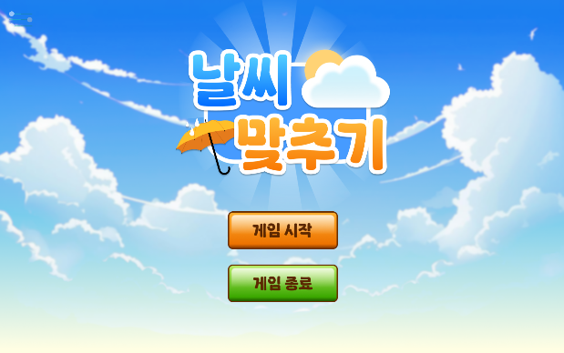
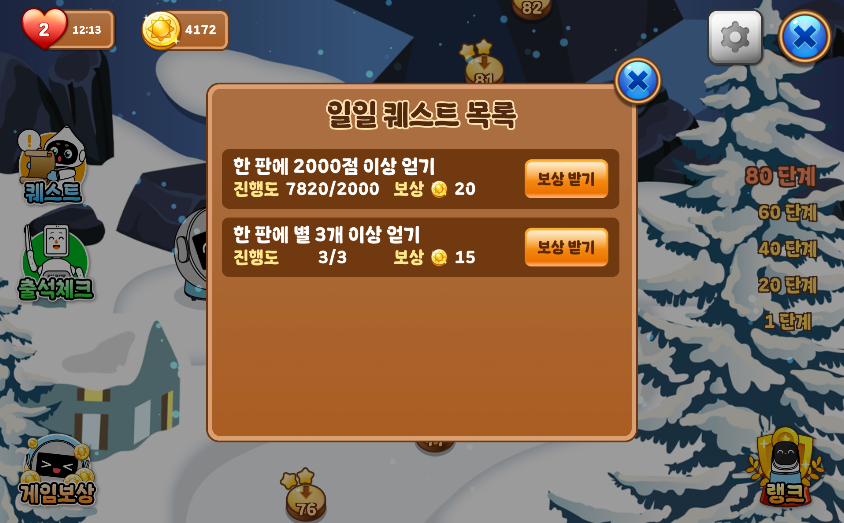
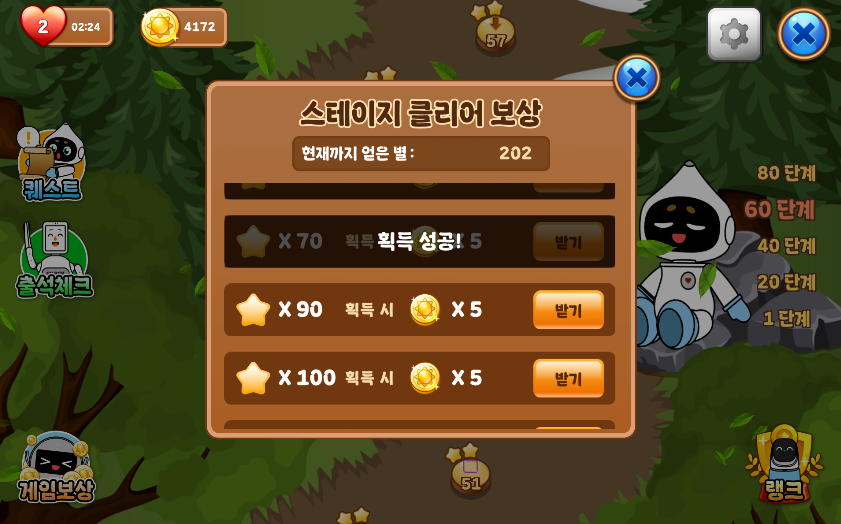
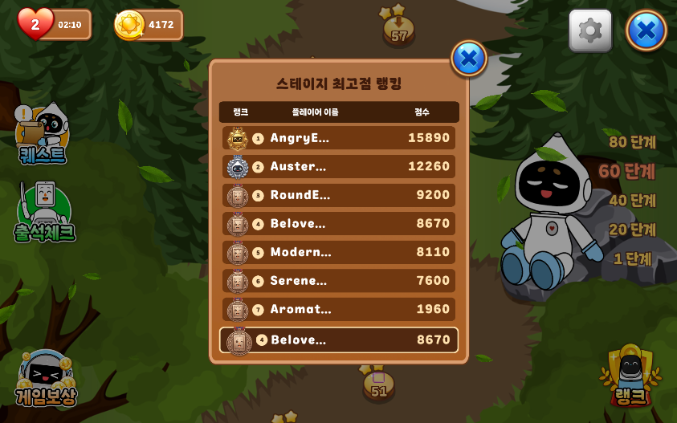
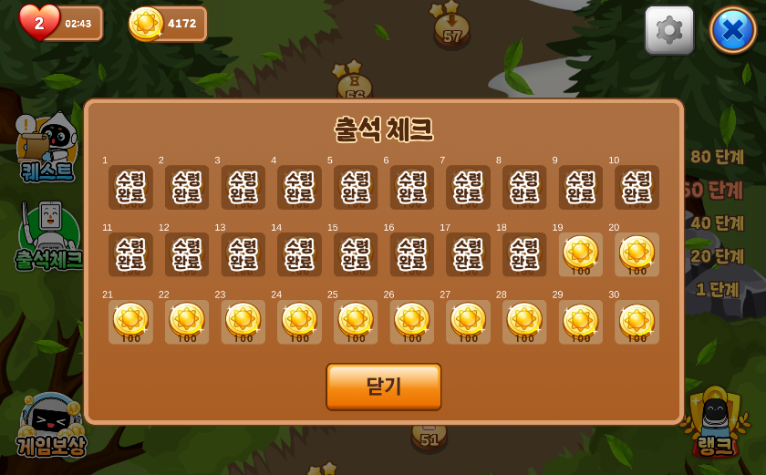
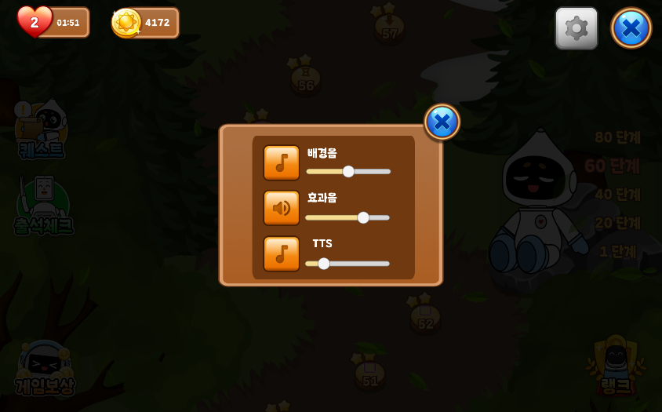

가볍게 시작하지만, 반복 플레이로 이어지는 구조
기본 플레이는 매우 익숙합니다. 같은 색 퍼즐을 맞추고, 연쇄 반응을 일으키며, 레벨 목표를 달성합니다. 하지만 프로젝트의 초점은 단순히 퍼즐을 구현하는 데서 멈추지 않았습니다. 플레이어가 하루 단위로 다시 접속하고, 목표를 확인하고, 보상을 받으며, 랭킹을 통해 자신의 위치를 확인하는 서비스형 구조로 자연스럽게 확장했습니다.
귀여운 비주얼과 직관적인 조작을 가진 Match-3 퍼즐 게임을 바탕으로, 반복 플레이를 유도하는 성장 요소와 라이브 서비스 감각을 더했습니다. 한 번 클리어하고 끝나는 구조보다, 매일 다시 들어오고 싶어지는 흐름을 만드는 데 초점을 둔 작업입니다.
처음에는 누구나 쉽게 이해할 수 있어야 하고, 계속 플레이할 이유는 점점 더 선명해져야 합니다. 이 프로젝트는 그 두 가지를 동시에 만족시키는 방향으로 구성했습니다.
기본 플레이는 매우 익숙합니다. 같은 색 퍼즐을 맞추고, 연쇄 반응을 일으키며, 레벨 목표를 달성합니다. 하지만 프로젝트의 초점은 단순히 퍼즐을 구현하는 데서 멈추지 않았습니다. 플레이어가 하루 단위로 다시 접속하고, 목표를 확인하고, 보상을 받으며, 랭킹을 통해 자신의 위치를 확인하는 서비스형 구조로 자연스럽게 확장했습니다.
퍼즐 장르에 익숙하지 않아도 바로 이해할 수 있도록 입력과 피드백을 단순하고 분명하게 구성했습니다.
한 판이 길지 않아도 성취감이 남도록 만들어 출석, 보상, 퀘스트 루프와 잘 맞도록 설계했습니다.
콤보와 클리어의 만족감 위에 일일 보상과 누적 보상을 겹쳐 플레이 이유를 분명하게 만들었습니다.
콘텐츠를 한 번 만드는 데서 끝나지 않고, 서비스처럼 관리할 수 있는 확장 포인트를 염두에 두었습니다.
매치, 제거, 낙하, 목표 달성이라는 Match-3의 기본 구조를 안정적으로 유지하면서 레벨 단위의 완결된 재미를 제공합니다.
퀘스트와 보상, 출석과 랭킹을 붙여 플레이어의 행동이 하루 단위 루프로 이어지도록 전체 경험을 확장했습니다.



실제 스크린샷이나 플레이 영상을 넣으면 프로젝트의 분위기와 사용성, 보상 구조가 한눈에 전달되도록 구성한 영역입니다.
첫 진입 화면, 퍼즐 플레이, 특수 아이템 연출, 보상 수령 장면 중 프로젝트의 성격을 가장 잘 보여주는 이미지를 배치하기 좋은 메인 영역입니다.

재방문 동기를 설명하는 UI 장면을 담기 좋은 슬롯입니다.

유저가 즉시 성취를 체감하는 구간을 보여주기 좋습니다.

퍼즐 플레이가 서비스형 경험으로 연결되는 장면을 보강할 수 있습니다.



핵심은 기존 퍼즐 구조를 빠르게 파악하고 필요한 부분을 정리해, 짧은 기간 안에 운영형 기능을 안정적으로 얹는 것이었습니다.
프로젝트의 기술 포인트는 단순히 기능을 많이 붙인 것이 아니라, 기존 구조를 읽고 정리한 뒤 운영형 기능을 무리 없이 연결했다는 점에 있습니다.
새로 모든 것을 만드는 대신, 이미 존재하는 게임의 핵심 구조를 유지하면서 확장이 필요한 지점을 골라 정리했습니다. 이 접근 덕분에 불필요한 재구현을 줄이고, 약 3주 안에 제작을 마무리할 수 있었습니다.
기존 Jelly Garden 구조를 그대로 덮어쓰기보다, 실제로 운영 기능이 붙어야 하는 지점을 먼저 분리했습니다. 메뉴 진입, 팝업 흐름, 데이터 반영, 상태 갱신 같은 연결부를 정리하면서 이후 기능 추가가 자연스럽게 이어지도록 만들었습니다.
핵심 퍼즐 로직은 유지하고, 서비스 기능이 얹히는 레이어를 중심으로 손봤습니다.
팝업, 버튼, 로딩, 보상 반영이 서로 충돌하지 않도록 흐름을 분명하게 정리했습니다.
기능별 매니저와 역할 분리를 기준으로 후속 확장이 가능하도록 구성했습니다.
사용자는 퍼즐을 플레이하지만, 시스템은 그 플레이를 일일 루프와 누적 보상 구조로 해석합니다. 이 흐름을 끊기지 않게 이어주는 것이 프로젝트의 핵심 설계 포인트였습니다.


GitHub에 정리한 주요 작업은 단순 UI 추가가 아니라, 서버 검증과 상태 동기화를 포함한 실제 운영 기능 구현에 가깝습니다.
플레이어가 하루 단위 목표를 인식하고 보상을 받도록 일일 퀘스트 흐름을 구성했습니다. 퀘스트 표시, 달성 상태 반영, 보상 수령 처리까지가 하나의 루프로 이어지도록 설계했습니다.
매일 다른 목표를 확인하고 처리하는 이유를 제공합니다.
클라이언트 UI와 서버 상태가 어긋나지 않도록 갱신 시점을 관리했습니다.
매일 접속하는 플레이어에게 가장 빠르게 보상이 체감되는 영역입니다. Cloud Save와 Cloud Code를 통해 날짜 기준 상태를 판단하고, 출석 보상 수령을 안정적으로 처리했습니다.
월 단위 / 일 단위 상태를 기준으로 출석 진행을 관리합니다.
버튼 입력과 보상 반영 사이의 체감 지연을 줄이는 방향으로 UI를 보강했습니다.
보상은 단순한 숫자 증가가 아니라, 플레이를 계속하게 만드는 핵심 설계 요소입니다. 재화 지급, 수령 상태, UI 반영을 하나의 흐름으로 묶어 사용자가 결과를 즉시 이해할 수 있도록 했습니다.
수령 전후 상태가 명확히 보이도록 UI 흐름을 설계했습니다.
이후 다른 이벤트 보상으로 확장할 수 있는 구조를 염두에 두었습니다.
퍼즐 플레이를 단순 소비형 경험으로 끝내지 않기 위해 경쟁 요소를 더했습니다. 점수 기반 랭킹은 플레이 결과를 외부 기준과 비교하게 만들고, 다시 도전할 이유를 강화합니다.
자신의 플레이 결과를 순위로 확인하게 만들어 반복 플레이 동기를 만듭니다.
맵 입력과 UI 충돌이 나지 않도록 가드 흐름까지 함께 정리했습니다.
이 프로젝트의 기술적 가치는 기존 게임 자산을 빠르게 이해하고, 필요한 구조만 정리해, 약 3주 안에 운영형 기능까지 연결한 실행력에 있습니다. 단순 구현보다도, 어떤 부분을 건드리고 어떤 부분은 유지할지 판단한 과정 자체가 중요한 작업이었습니다.
이 작업은 새로운 게임을 처음부터 만드는 프로젝트라기보다, 이미 존재하는 퍼즐 구조를 읽고 서비스 기능을 붙일 수 있는 형태로 다듬는 프로젝트에 가까웠습니다.
레벨 진입, 팝업, 데이터 반영, 주요 매니저의 역할을 분석해 어디를 리팩토링해야 할지 먼저 결정했습니다.
일일 퀘스트, 출석 체크, 보상 지급, 리더보드 흐름을 실제 플레이 루프와 연결하고 상태 갱신을 안정화했습니다.
맵 클릭 가드, 팝업 충돌 방지, 보상 수령 직후 UI 반영 같은 체감 품질을 정리하며 마무리했습니다.
기존 구조를 재활용하면서도 필요한 서비스 기능을 충분히 보여줄 수 있는 포트폴리오 결과물로 정리했습니다.
단순히 퍼즐 게임을 구현했다는 사실보다, 이미 존재하는 구조를 빠르게 읽고 정리한 뒤 운영형 기능을 설계하고 연결할 수 있다는 점을 보여줍니다. 제한된 기간 안에서 우선순위를 세우고, 구현과 사용자 경험을 함께 챙긴 사례입니다.